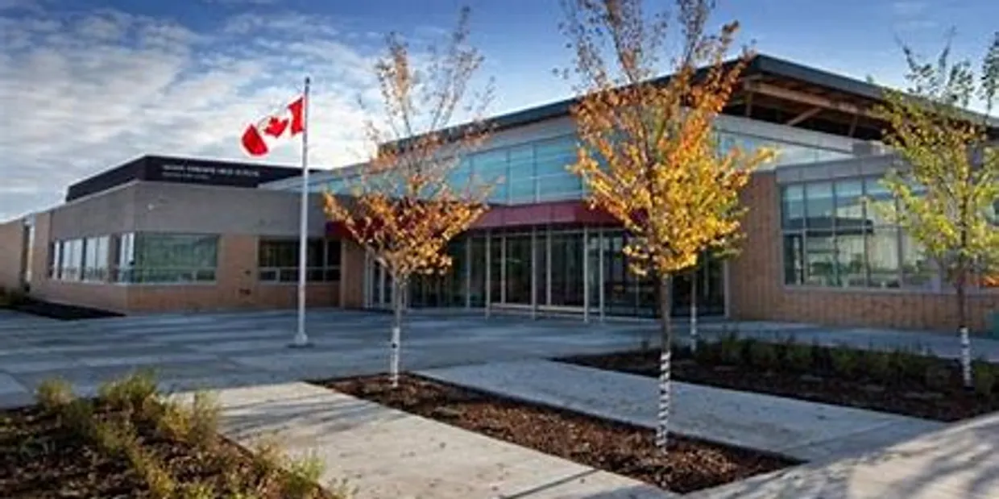

Sean Jin
Email: seanjin660@gmail.com | Phone: 8254613937 | Github: github.com/seanxjin
Mailing Address: Canada, AB, somewhere of the somewhere for the somewhere
About
Hello, I am currently a first year intro Computing Science student at the University of British Columbia, looking for opportunities to put myself out there and improve my skills and extends my work experience. I am also excited to connect and meet fellow industry professionals that are well versed in the workspace!
Education
-
Lillian Osborne Secondary School

-
University of British Columbia : BSc in Computing Science

Experience
-
- Event: Derrick Golf and Winter Club Summer Camp
- Worked as a summer camp volunteer training campers and acted as sparring partners.
-
- Event: Biztech HelloHacks
- Participated in a hackathon where we made an alternative to UBC's nutrislice, called Forage. It served as a better alternative for food information and gave directions to on site food courts.
Skills
Programming
- Python
- Java
- SQL
- Github
- HTML
Languages
- Mandarin
- English
- Japanese
Awards
Badminton a Bunch lol
Extra Hobbies